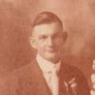

- Mary (Stork) Hennrich (1871-1942)
- Mary was the first child of Laurentius and Bertha, born September 10, 1871, in Walsh. She married Christian Hennrich (1864-1941) on April 26, 1892, in
Evansville, IL. Together they had seven children:
- John Joseph Hennrich (1893-1962)
- Anton Christopher Hennrich (1899-1982)
- Vincent Hennrich (1904-1990)
- Martha E. (Hennrich) Bleem (1906-1978)
- Viola C. (Hennrich) Fenaia (1909-2003)
- Eileen Hennrich (1911-1986)
- Leona Cecelia (Hennrich) Mertens (1913-2007)
- John Stork (1876-1938)
- John was born December 14, 1876, in Walsh. He married Catherine Heinen (1883-1945) on September 16, 1902, in Evansville. Together they had two sons:
- Arthur William Stork (1905-1963)
- Clemens C. Stork (1907-1967)
- Emelia J. (Stork) Gaertner (1878-1963)
- Emelia was born April 26, 1878, in Walsh. She married Anton J. Gaertner (1874-1952) on April 19, 1898, in Evansville. Together they had six children, three
sons and three daughters:
- Lawrence Nicholas Gaertner (1899-1981)
- Leo Frederick Gaertner (1901-1992)
- Eula Mary (Gaertner) Smith (1904-1984)
- Marcella Marie (Gaertner) Pautler (1906-1975)
- Vernon Ben Gaertner (1910-1955)
- Magdalen Anna (Gaertner) Wittenbrink (1913-1988)
- August Jacob Stork (1880-1929)
- August was born December 6, 1880, in Preston, IL. He married Ida May Roth (1886-1986) on August 18, 1903, in Evansville. Together they had three children:
- Vera (Stork) Petry (1904-1990)
- Harold J. Stork (1912-2005)
- Nathan Lawrence Stork (1921-2006)
- Anna C. (Stork) Conrad (1883-1946)
- Anna was born December 17, 1883, in Randolph County. She was married twice, first to Henry John Pautler (1875-1919) on June 2, 1903, in Randolph County.
Together they had one son:
- Clarence L. Pautler (1904-1971)
- Rose F. (Stork) Schilling (1887-1961)
- Rose was born August 8, 1887, in Randolph County. She married Henry Emich Schilling (1888-1967), and together they had two sons:
- Wilbert Herman "Bert" Schilling (1917-1979)
- Herbert L. Schilling (1920-1974)
- Lawrence Nicholas Stork (1890-1980)
- Lawrence was born May 21, 1890, in Walsh. After serving in the U.S. Army during World War I, he married Hazel Bertha Heinz (1901-1984) on June 9, 1921, in St.
Louis, MO. Together they had six children:
- Ralph Ezra Stork (1923-2005)
- Gerald Lawrence Stork (1926-2016)
- George John Stork (1930-2012)
- Living daughter (born 1930s)
- Magdalene M. (Stork) Liefer (1935-2016)
- Vernon Lawrence Stork (Jan. 1940 - Jun. 1940)
- Bertha Helen (Stork) Pautler (1893-1975)
- Bertha was the last child of Laurentius and Bertha, born March 21, 1893, in Walsh. She married Ezra Martin Pautler (1899-1962) on November 16, 1921, in Walsh.
Together they had three children:
- Bertha Mary (Pautler) Wesbecher (1922-2005)
- Garnita A. (Pautler) Schulein (1925-2002)
- Robert G. Pautler (1933-2018)
Mary (Stork) Hennrich
John Stork
Emelia (Stork) Gaertner
August Stork
Anna (Stork) Conrad
Rose (Stork) Schilling
Lawrence Stork Hazel (Heinz) Stork
 Bertha (Stork) Pautler
Bertha (Stork) Pautler